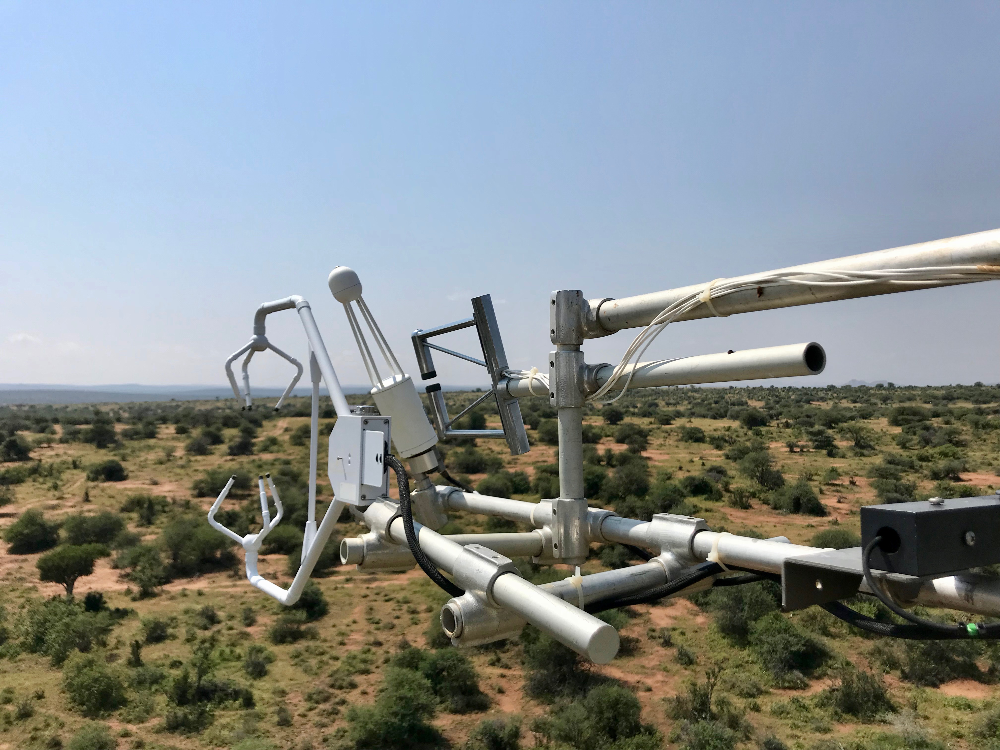

Code
import pandas as pd
base = 'https://eds-217-essential-python.github.io/data/'
temp = pd.read_csv(base + 'monthly_temperature_data.csv')
co2 = pd.read_csv(base + 'monthly_co2_concentration.csv')🌍 Two Records, Sixty-Six Years Apart

Two of the most important time series in environmental science are kept by different people, for different reasons, in different places.
NASA’s GISTEMP record estimates how far each month’s global surface temperature sits from a twentieth-century baseline. It starts in 1880, because that is roughly when enough thermometers existed to average.
The Mauna Loa record measures the concentration of carbon dioxide in the atmosphere directly, in parts per million, from an observatory near the summit of a Hawaiian volcano. It starts in 1958, because that is when Charles Keeling built the instrument.
The most famous graph in climate science puts those two side by side. Doing that requires everything you learned today, and it requires you to make a decision in the first five minutes that changes what the rest of the analysis is about.
Work in pairs, in one shared notebook, taking turns at the keyboard. Swap every time you finish a numbered task. The person not typing says out loud what they expect the answer to look like before the cell is run.
You have 45 minutes.
All four are from this morning and the session you just finished.
pd.merge(left, right, on='key') # the join sentence
pd.merge(left, right, on='key', how='left') # keep every row on the left
pd.to_datetime(column, format='%Y-%m-%d') # the parsing sentence
column.dt.year # and its accessors
df.pivot_table(index=, columns=, values=) # the pivot sentencePlus the two you have been using all week:
Create a notebook named Colab_6D_Two_Records.ipynb, with both partners’ names in the title cell, then read the two files:
Answer each question with code, then write the answer in a markdown cell underneath, in a complete sentence with the numbers in it.
How many rows does each table have, and what columns? What is the earliest and latest Date in each? (.min() and .max() on the Date column will do it, since these dates are text in %Y-%m-%d form and text in that form sorts correctly.)
Merge the two tables on Date, with the default how=. How many rows come back?
Merge them again with how='left', putting temp on the left. How many rows now, and how many nulls, in which column?
In a markdown cell: the two merges differ by 940 rows. Say in one sentence what those 940 rows are, without looking anything up, since your answer to question 1 already told you.
A decision, and there is no right answer that does not depend on the question. You are writing one of the following two papers. For each one, say which merge you would use and why:
Work from the inner merge for the rest of the exercise, and give it a name you will not confuse with anything else.
Copy the inner merge into a table called climate, ending the line with .copy(). Then parse its Date column into a new column called date, and prove the parse worked by printing the new column’s dtype.
Add year and month columns using the .dt accessors.
Build a table of annual means: group by year and report the count of months, the mean MonthlyAnomaly, and the mean CO2Concentration. Show the first three rows and the last three.
Two of the sixty-seven years in that table are not twelve months long. Which two, and why? Filter them out into a table called full_years and say how many years survive.
In a markdown cell: what would the 2024 row have done to a claim about the warmest year on record, if you had not checked the count? Two sentences.
Build a wide table with year down the rows, month across the columns, and CO2Concentration in the cells. Show the first three rows and the last three.
That one table holds two different patterns at once. Read it down a single column, then read it across a single row. In a markdown cell, describe both in one sentence each.
Use the wide table to measure the second pattern. For every year, the difference between its largest monthly value and its smallest is the size of the annual cycle. Compute that difference for 1959 and for 2023, and report both.
In a markdown cell: the annual cycle in CO₂ is caused by the northern hemisphere’s plants, which take carbon out of the air in the growing season and put it back in the autumn. Given that, say what your two numbers from question 13 might mean, and say honestly how confident you are in a comparison of two single years.
Build the same wide table for MonthlyAnomaly. Does the temperature record have a comparable seasonal cycle in it? Say why or why not in one sentence. (The answer is in what the word anomaly means.)
Using full_years, compare the 1960s with the 2010s. Compute the mean of each column for year between 1960 and 1969, and again for year between 2010 and 2019, and report the change in each.
In a markdown cell of four or five sentences: state the two changes you measured, with units. Then state clearly what this analysis does not show. You have put two curves in the same table and found that both went up; name one thing a scientist would need before calling that a causal claim.
Check that:
how='inner' did to your row count and whyformat= to every pd.to_datetime() call